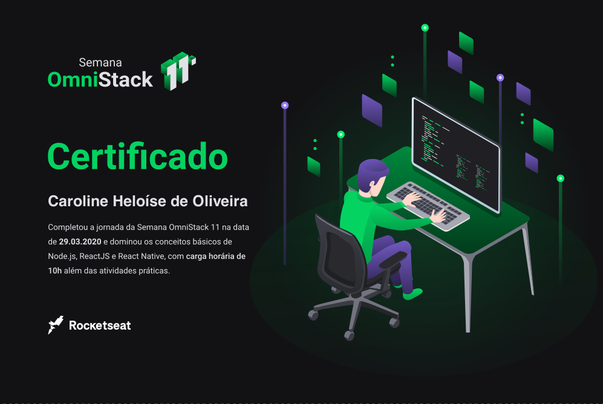

| _ [] X |
|---|
Layout da Aplicação

| _ [] X |
|---|
A Semana Omnistack 11 foi um evento promovido pela Rocketseat e ministrado pelo instrutor Diego Fernandes nos dias 23 a 27 de março de 2020.
O objetivo foi o desenvolvimento de um projeto do zero utilizando as tecnologias: Node.js, React, React Native e Expo.
As aulas contaram com a elaboração do back-end, front-end e mobile da aplicação.
O projeto criado foi a plataforma chamada Be the Hero, que visa conectar pessoas que desejam fazer contribuições monetárias a ONG's que precisam de ajuda.
Clique aqui para acessar o repositório no GitHub.
| _ [] X |
|---|
| _ [] X |
|---|

Para a obtenção do certificado tivemos que passar por um teste composto por 15 perguntas sore as tecnologias apresentadas durante a semana. (Clique na imagem para ampliar)
Tivemos também a oportunidade de participar de uma comunidade exclusiva no Discord e nos conectar com diversos desenvolvedores e trocar experiências.
| _ [] X |
|---|
O evento tinha como público alvo programadores avançados (algo que eu ainda não era), mas mesmo ficando perdida em muitas partes, o aprendizado que eu adquiri imensurável. Alguns exemplos do que aprendi foram: